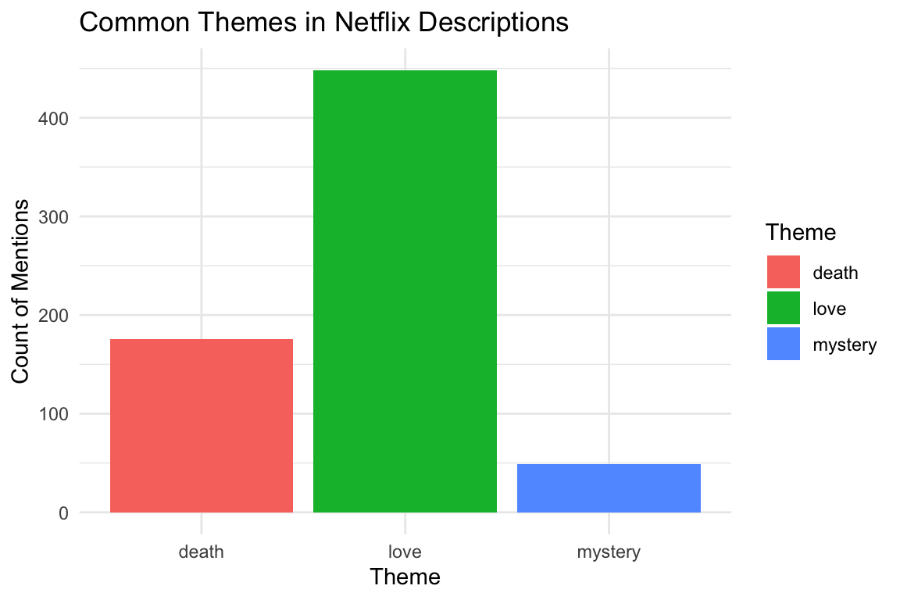
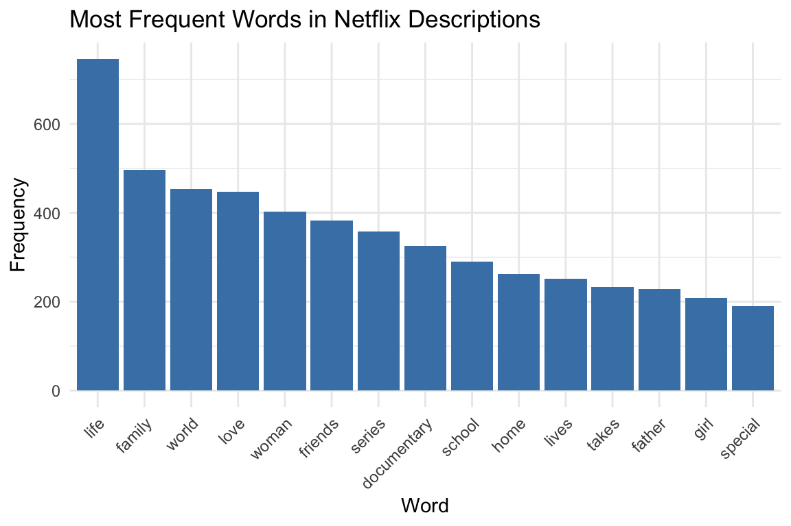
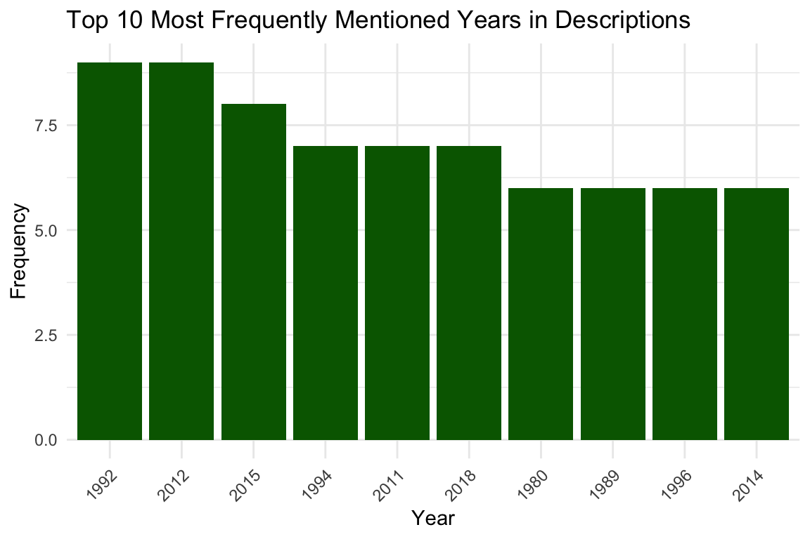
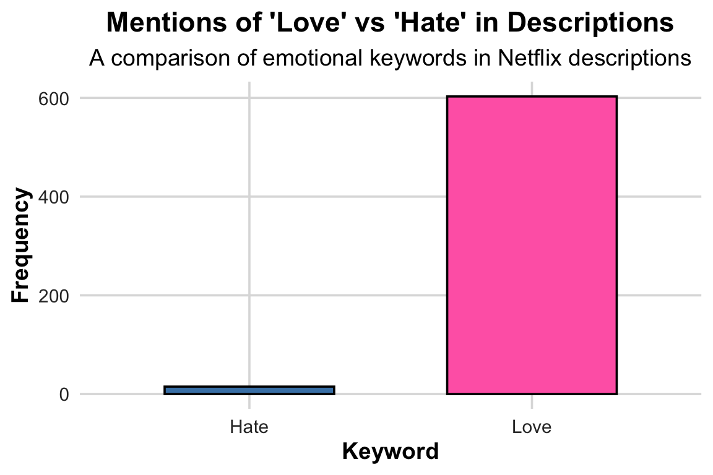
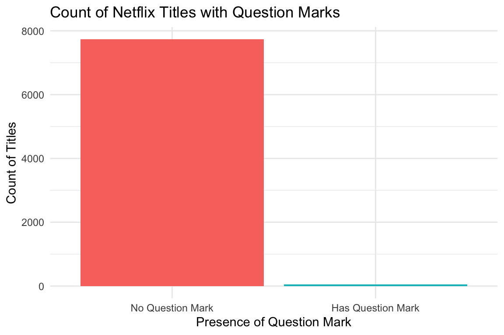

netflix_titles <- readr::read_csv(
"https://raw.githubusercontent.com/rfordatascience/tidytuesday/main/data/2021/2021-04-20/netflix_titles.csv"
)Project 2: Netflix Text Analysis
Introduction
This report analyzes Netflix movie and TV show descriptions using text mining techniques. The dataset, accessed from TidyTuesday (2021-04-20), includes thousands of titles from a variety of genres and regions, from the start of Netflix to 2019. My goal is to uncover patterns in naming and description practices that reveal thematic or marketing trends.
What proportion of Netflix Titles Contain Numbers?
We begin by checking how common it is for Netflix titles to contain numbers (e.g., 13 Reasons Why, 3%). This could reflect stylistic choices aimed at emphasizing uniqueness or mystery.
netflix_titles <- netflix_titles |>
mutate(has_number = str_detect(title, "\\d+"))
table(netflix_titles$has_number)
FALSE TRUE
7361 426 prop.table(table(netflix_titles$has_number))
FALSE TRUE
0.94529344 0.05470656 #Here, we use the `str_detect()` function with the regular expression `\\d+` to check whether each title contains a **number** (like *13 Reasons Why* or *3%*).
#This tells us how common numeric titles are — a pattern that can reflect marketing or thematic choices.
#The table above shows how many Netflix titles contain numbers compared to those that do not.')The results show that only 426 out of 7,787 Netflix titles (about 5.5%) contain a number, while the remaining 94.5% do not. This tells us that numeric titles are relatively rare in Netflix’s catalog. When they do appear, they tend to be used deliberately—often to signal a countdown (3%), a sequence (Part 2), an age or milestone (13 Reasons Why), or some other device meant to catch attention or provide context.
Counting Thematic Keywords in Descriptions
netflix_titles <- netflix_titles |>
mutate(
love_mentions = str_count(description, "\\b(?i)love\\b"),
death_mentions = str_count(description, "\\b(?i)death\\b"),
mystery_mentions = str_count(description, "\\b(?i)mystery\\b")
)
theme_counts <- netflix_titles |>
summarise(
love = sum(love_mentions, na.rm = TRUE),
death = sum(death_mentions, na.rm = TRUE),
mystery = sum(mystery_mentions, na.rm = TRUE)
) |>
pivot_longer(cols = everything(), names_to = "theme", values_to = "count")
ggplot(theme_counts, aes(x = theme, y = count, fill = theme)) +
geom_col() +
labs(
title = "Common Themes in Netflix Descriptions",
x = "Theme",
y = "Count of Mentions",
fill = "Theme"
) +
theme_minimal()
Interpretation:
The first table shows the count of titles that do or do not contain a number. TRUE indicates the title contains at least one digit.
The plot compares the frequency of the words “love,” “death,” and “mystery” across all Netflix descriptions.
We can see that “love” dominates, revealing that romantic themes are heavily used.
“Death” and “mystery” occur less often, but still signal important narrative categories.
This visualization illustrates how simple word counting can reveal broad narrative trends.
Finding Adjectives That Appear Before “Story” (Lookaround Example)
story_words <- netflix_titles |>
mutate(adj_before_story = str_extract(description, "\\b\\w+(?= story)")) |>
filter(!is.na(adj_before_story)) |>
mutate(adj_before_story = tolower(adj_before_story)) |>
anti_join(stop_words, by = c("adj_before_story" = "word")) |>
count(adj_before_story, sort = TRUE)
head(story_words, 10)# A tibble: 10 × 2
adj_before_story n
<chr> <int>
1 true 48
2 love 8
3 life 5
4 origin 3
5 biblical 2
6 crime 2
7 dark 2
8 fictional 2
9 age 1
10 american 1Here we use a regular expression with a lookahead — (?= story) — to extract the word immediately before “story” in each description.
For example, in a phrase like “an incredible story”, the pattern will capture “incredible.”
Interpretation: Looking at the top 10 words preceding story, it is clear that “true” is a clear winner. After a sharp fall off, love, life and origin take places 2-4. This trend reveals that almost all of the words before ‘story’ are adjectives describing the story.
Most Frequent Words in Descriptions (Excluding filler)
data("stop_words")
top_words <- netflix_titles |>
unnest_tokens(word, description) |>
anti_join(stop_words, by = "word") |>
count(word, sort = TRUE) |>
slice_head(n = 15)
ggplot(top_words, aes(x = reorder(word, -n), y = n)) +
geom_col(fill = "steelblue") +
labs(
title = "Most Frequent Words in Netflix Descriptions",
x = "Word",
y = "Frequency"
) +
theme_minimal() +
theme(axis.text.x = element_text(angle = 45, hjust = 1))
Interpretation:
This bar chart shows the 15 most common non-stop words found in Netflix descriptions.
Words like “life,” “family,” “world,” and “love” appear prominently — reinforcing the emotional and human-centered tone of Netflix’s catalog.
This kind of frequency analysis helps identify how streaming services position their content around universal, relatable ideas.
Additional Regex Explorations
Extracting Years from Descriptions
netflix_titles <- netflix_titles |>
mutate(year_mentions = str_extract_all(description, "\\b(19|20)\\d{2}\\b"))
# Count the frequency of years
year_counts <- netflix_titles |>
unnest(year_mentions) |>
count(year_mentions, sort = TRUE) |>
slice_head(n = 10) # Select top 10 years
# Plot the most frequently mentioned years
ggplot(year_counts, aes(x = reorder(year_mentions, -n), y = n)) +
geom_col(fill = "darkgreen") +
labs(
title = "Top 10 Most Frequently Mentioned Years in Descriptions",
x = "Year",
y = "Frequency"
) +
theme_minimal() +
theme(axis.text.x = element_text(angle = 45, hjust = 1))
Identifying Titles with Repeated Words
netflix_titles <- netflix_titles |>
mutate(repeated_words = str_detect(title, "\\b(\\w+)\\b.*\\b\\1\\b"))
# Count titles with repeated words
repeated_word_counts <- netflix_titles |>
count(repeated_words)
# Display the counts
repeated_word_counts# A tibble: 2 × 2
repeated_words n
<lgl> <int>
1 FALSE 7560
2 TRUE 227Analysis of Results
The results indicate that out of 7,787 Netflix titles:
- 7,560 titles (97.1%) do not contain repeated words in their titles.
- 227 titles (2.9%) contain repeated words in their titles.
Interpretation:
The overwhelming majority of Netflix titles avoid repeated words, suggesting a preference for unique and concise naming conventions. Titles with repeated words, while rare, may be used deliberately to emphasize certain themes or create a memorable effect. For example, repetition can evoke rhythm or reinforce key ideas, as seen in titles like “Bye Bye Birdie” or “Run Lola Run.”
Extracting Sentences with “Love” or “Hate”
netflix_titles <- netflix_titles |>
mutate(love_hate_sentences = str_extract_all(description, "[A-Z][^.!?]*(love|hate)[^.!?]*[.!?]"))
# Count sentences mentioning 'love' or 'hate'
love_hate_counts <- netflix_titles |>
unnest(love_hate_sentences) |>
mutate(keyword = ifelse(str_detect(love_hate_sentences, "love"), "Love", "Hate")) |>
count(keyword, sort = TRUE)
# Plot the counts
library(scales) # For percentage formatting
ggplot(love_hate_counts, aes(x = keyword, y = n, fill = keyword)) +
geom_col(width = 0.6, color = "black", show.legend = FALSE) +
scale_fill_manual(values = c("Love" = "#FF69B4", "Hate" = "#4682B4")) +
scale_y_continuous(labels = comma) +
labs(
title = "Mentions of 'Love' vs 'Hate' in Descriptions",
subtitle = "A comparison of emotional keywords in Netflix descriptions",
x = "Keyword",
y = "Frequency"
) +
theme_minimal(base_size = 14) +
theme(
plot.title = element_text(face = "bold", hjust = 0.5),
plot.subtitle = element_text(hjust = 0.5),
axis.text = element_text(color = "#333333"),
axis.title = element_text(face = "bold"),
panel.grid.major = element_line(color = "#DDDDDD"),
panel.grid.minor = element_blank()
)
Extracting Titles with Question Marks
# Identify titles containing question marks
netflix_titles <- netflix_titles |>
mutate(has_question_mark = str_detect(title, "\\?"))
# Count titles with and without question marks
question_mark_counts <- netflix_titles |>
count(has_question_mark)
# Plot the counts
ggplot(question_mark_counts, aes(x = has_question_mark, y = n, fill = has_question_mark)) +
geom_col(show.legend = FALSE) +
scale_x_discrete(labels = c("No Question Mark", "Has Question Mark")) +
labs(
title = "Count of Netflix Titles with Question Marks",
x = "Presence of Question Mark",
y = "Count of Titles"
) +
theme_minimal()
Interpretation:
The plot shows the distribution of Netflix titles based on whether they contain a question mark. Titles with question marks are relatively rare, reflecting their use in specific contexts such as rhetorical or intriguing titles (e.g., “What Happened to Monday?”). This suggests that question marks are employed strategically to evoke curiosity or highlight uncertainty in the title’s theme.
Summary of Insights
From these visual and textual analyses, we can draw several conclusions:
- Titles with numbers are relatively common.
- The word “love” overwhelmingly dominates thematic keywords, suggesting that romantic and emotional themes are heavily emphasized.
- Descriptions frequently include adjectives like “true” or “untold” before “story,” reflecting Netflix’s use of authenticity and intrigue in marketing language.
- The most common descriptive words — life, family, world — reveal that Netflix’s storytelling appeals to broad, shared human experiences.
Data Sources
Accessed via TidyTuesday (R4DS project): TidyTuesday Netflix Dataset – 2021-04-20
Original source: Kaggle – Netflix Movies and TV Shows Dataset by Shivam Bansal (CC-BY-SA 4.0 License)
Shivam Bansal last updated this source 4 years ago